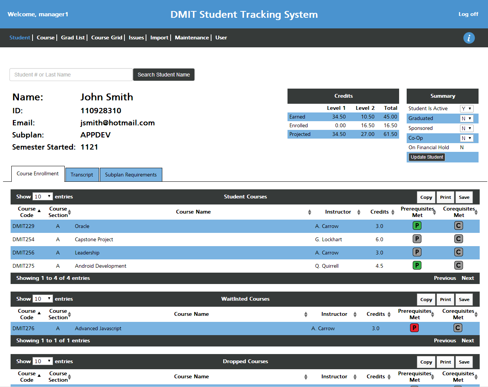

DSTS
Interface

Purpose
The purpose of the DMIT Student Tracking System (DSTS) application is to track students by displaying student information and flagging any issues that students may have with either course selection or graduation.
Students at the Northern Alberta Institute of Technology (NAIT) can register for classes in the Digital Media and IT (DMIT) program . It is flexible because it allows students to customize their course selection within various areas of study. The DMIT administrative staff have to track all students' progress manually, despite having no control over which courses the students select. To complicate the situation, the DMIT program went through a massive change that required a new set of courses and rules, but it had to continue supporting the old courses and rules.
Input
The student information is entered into the system by uploading .PDF and .CSV reports generated from the registration system. This was the portion of the project that required the most intensive coding. While the two .CSV files were fairly straightforward, the .PDF file was very complicated to import. Not only is it harder to extract clean data from a .PDF format, but the file itself contained more complicated student data.
Contributions
Team Leader
My leadership responsibilities include: being familiar with the whole system, setting up and maintaining the list of each member's tasks and responsibilities, checking up with each member's progress, assisting with any tasks, reassigning tasks to ease workloads.
Database
During inception phase, the group split into two groups to develop the data structures and the user interface/experience. My group analysed the client information to plan the database tables and classes required for the system. See the finished ERD below.
Use Cases
Each member coded at least one use case from database to screen: SQL stored procedures, C# data access classes, C# business logic classes, C# behavior code, ASP presentation code. I was responsible for coding: the course prerequisites that are updated in the Maintenance screen, the Subplan Requirements tab on the Student screen, the Grad List screen, the credit totals on the Student and Grad List screens, and some of the issues on the Issue screen.
Documentation
Each member took on a management role for a particular section of the project: Database, Library, Screens, Security, Reports, Testing, Documentation, Repository. I was in charge of documentation, which involved setting up the template for every document and its sections, assigning team members to each section, verifying that each section was completed, and proofreading and editing each section.
Editor
Initially, we did a group-review of the documents sent to clients. After barely making deadlines, we decided to have one person review the documents instead. I proofread each section for content, spelling, grammar, and sentence structure improvements. Afterwards, each member read it and sent me their revision suggestions to be incorporated for the final version.
Presentation
In April, an expo is held at NAIT where industry professionals are invited to view the capstone groups' final projects. For our presentation, I led a walkthrough of the Maintenance screen, talked about how to maintain the necessary course data, concluded the presentation, and fielded the questions from attendees.
Database
Process
Initially, we did not have access to the student data files, so we modeled our database using the clients' initial specifications and our own familiarity with the current system. Once we received the files, we had to modify the model significantly. As the development on the data import progressed, the database model was adjusted numerous times to account for all the intricacies that the files introduced.
Tools
Google Spreadsheets
We tried several different ways to keep track of progress: Email, MS Project Gantt chart, Google Spreadsheet, Trello card system. In the end, we used the Google Spreadsheet because everyone could view and edit the progress sheet quickly and simultaneously. It also offered simpler visual customization than the Gantt chart or card system.
GitHub
Since we were learning to use GitHub, we assigned one person as the Repo-Master with access to the main repository, and everyone else had to fork the main repo and use pull-requests to add their code. It was quite the learning curve. Thankfully, by the end of the project, we were merging near-flawlessly, and merge conflicts were handled with ease using kdiff3 merge tools.
DataTables
Instead of using ASP's tools to manually code table functions for paging, sorting, and searching, we used a jQuery plugin called DataTables. It takes the whole set of data and processes it in the front end. It means less calls to the database and a more natural look and feel for the user.